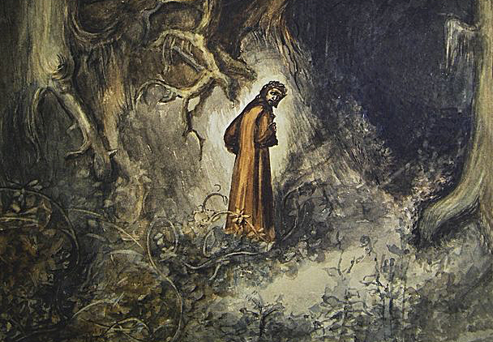
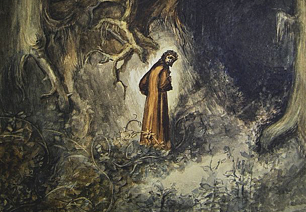
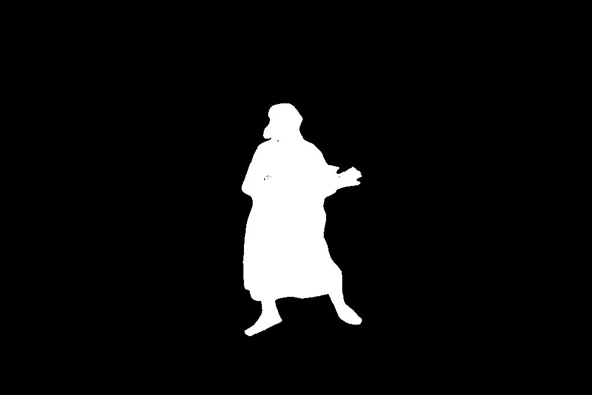

First, we compute the partial derivatives of the image in both x and y directions. We also define a ' humble' finite difference as our filter in the x and y directions as Dx = [1 -1] and Dy = [1 -1]^t.

Using these values, we convolve the image with these operators to obtain gradient components Gx and Gy, where Gx is the horizontal changes and vice versa. The gradient magnitude is calculated as the Euclidean norm of these components, which we can define as Gradient Magnitude = sqrt(Gx^2 + Gy^2).
Finally, we can threshold the gradient magnitude to create a binarized mapping where the pixels shown are above the threshold of 0.289.
The results are less noisy compared to using just the difference operator, as you can see, the edges appear smoother overall, whereas finer details seem to be filtered out.

The DoG filter combines smoothing and differentiation into a single operation, which is computationally more efficient. However, notice that the results are actually the same! In my code implementation, I wrote a line that essentially checks if the two images had values within a very small tolerance to see if they were equal, to which it returned true.
Below is one of my favorite portrays of Dante's Inferno when he is walking through the 'dense' forest in Canto 1
 

Honestly, the original after the sharpened version of 0.5 looks really similar to one another, except the 0.5 sharpening seems a bit 'cleaner' overall. I think this has to do mostly with the fact that image is an 'oil' painting (from what i can tell), so more likely than not, any increases will be noticed pretty easily. The sharpened value of 1.5 was just to show what I originally thought would have been the alpha value to get back to the original.
Here is the hybrid image of Derick and Nutmeg combined.


I also incorporated color into the hybrid process to see how it would turn out. Below are the following results:
Personally, I think having color for only Nutmeg (high frequencies) was the best result.
Note: I used some color balancing to make the images darker.
Here are some of the other hybrids that I created!
Now for my personal favorite hybrid...
What a crazy picture!!! Seriously looks like a cat close up and a dog father away. It feels like the 'distance function' in this case is a lot more 'forgiving'.
Here are the FFTs for the following pictures


Now here's a failure case...
Pretty sure the failure in this case was the fact that the shapes of the two pepes were just TOO different with one another. At least the eyes lined up reasonably well...
As per deliverables, not much to comment here... I will say though, I threw in some extreme sigma values for my Gaussian Blur which resulted in some surprsing results...


What a oraple... I achieved this with some extreme sigma values, so my stacks may look a bit off, but if I tone them down, then they would have looked as expected.
Now for the irregular shaped mask.

and heres the mask that I used
